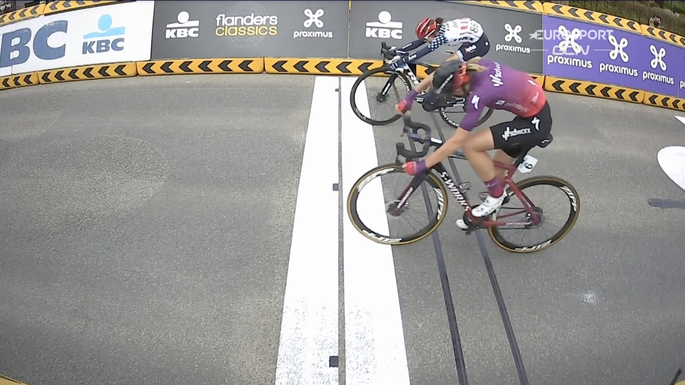
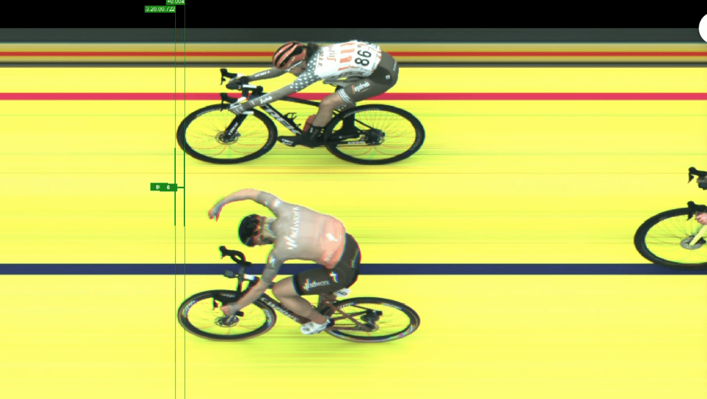
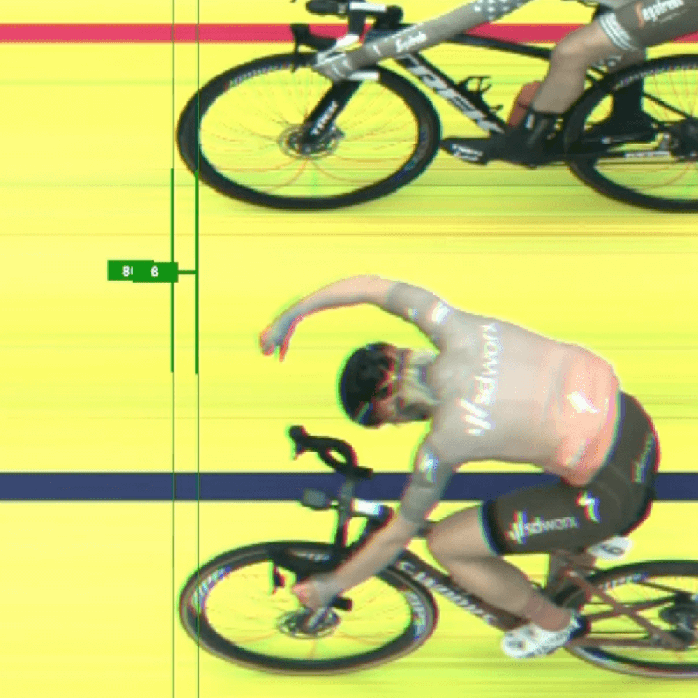
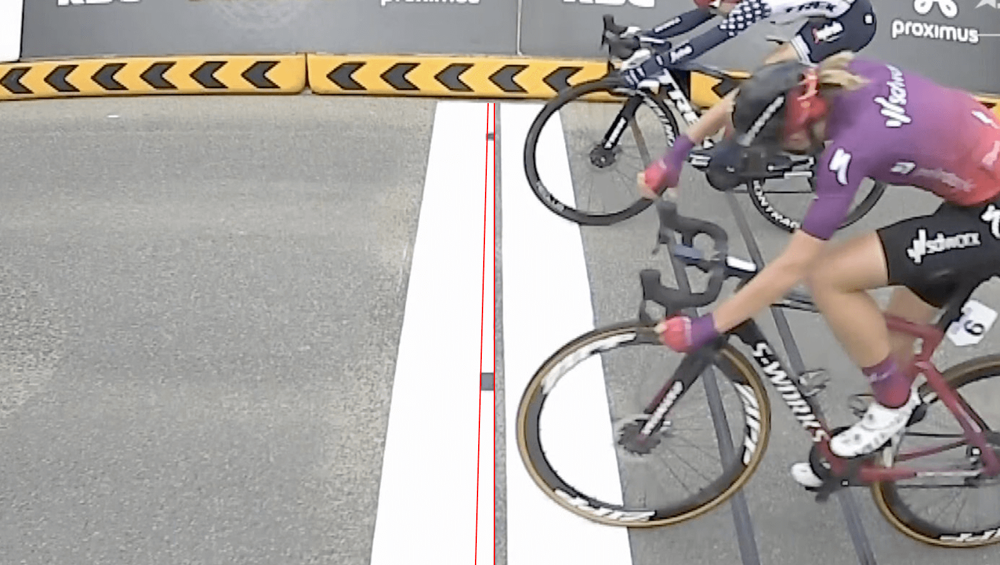
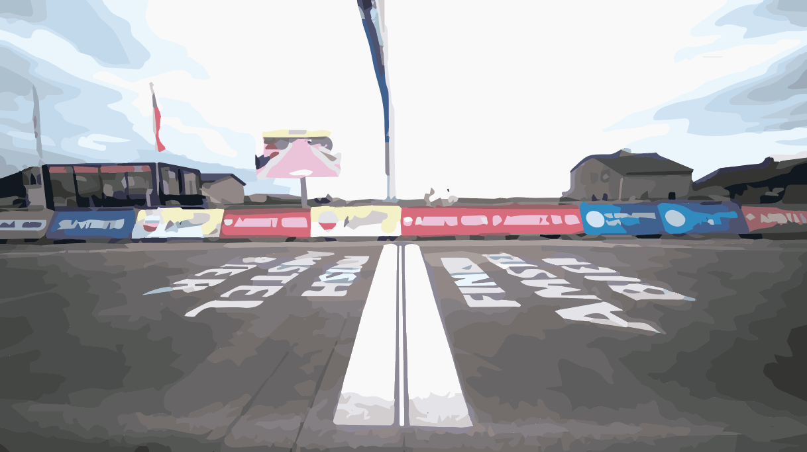
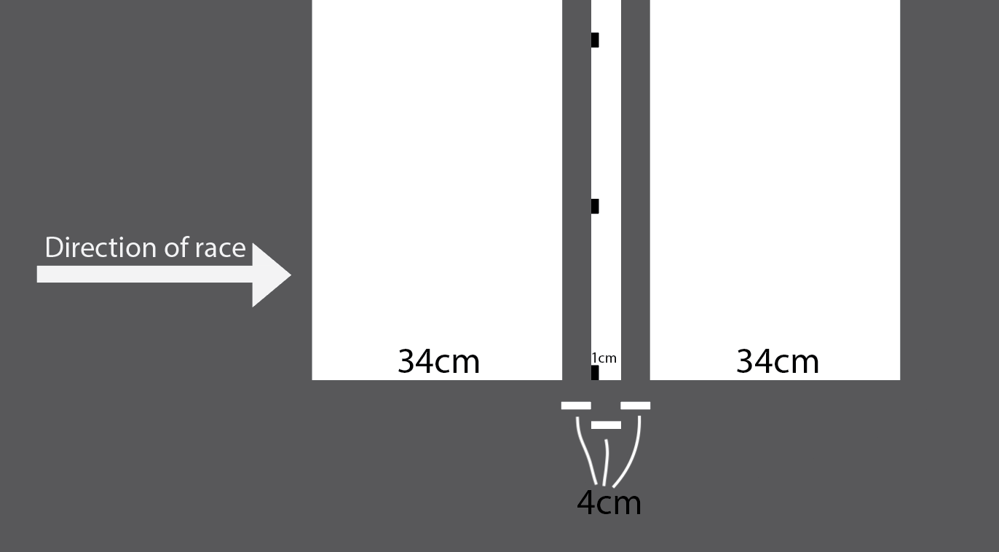

It's not the photo-finish operators, it's the UCI rules on how the finish line is painted
In light of my previous blog post which generated lots of discussion regarding the measurements involved in photo-finishes, I decided to take a closer look at other recent photo-finishes to see if any others were set up in a way that meant they could not give a definitive result. The most recent of these was the women's De Brabantse Pijl.
In this race, a group of 6 broke away with 23km to go and worked together until the final sprint.
Elisa Balsamo lead out the sprint, before both Demi Vollering and Ruth Winder both came around her from opposite sides. As Vollering crossed the finish line, thinking she had an insurmountable lead, she took her hand off the bars to celebrate as Winder launched her bike across the line with an expert bike throw.
It doesn't get any closer than that. #BPwomen pic.twitter.com/D0xtxbP0Av
— CyclingTips (@cyclingtips) April 14, 2021

The side-on camera showed what seems to be a win for Vollering, but the photo-finish showed Winder had won it by a pixel.


As per the footage from the men's Amstel Gold Race, the side-on camera at the finish and the photo-finish camera seemed to contradict each other.
Thankfully, the De Brabantse Pijl photo-finish requires significantly less investigation than that of Amstel Gold. As the race organizers had placed markers immediately after the finish line on the white band, we are able to match these up with the horizontal lines in the photo-finish photo. These markers are the dark squares just after the black finish line.
Since these markers appear in the photo-finish, it means the single pixel width photo-finish was taken along a plane that intersects these markers, so somewhere between the two red lines drawn here:

Given the black line is 4cm as per the UCI specs (page 139), and counting the number of pixels of the line next to the lower marker is 17 pixels. The corresponding marker is 23 pixels. This means the marker is 23 / 17 = 1.353 wider than the line, so therefore, the width of the marker is 1.353 * 4cm = 5.412cm.
According to the UCI specs, the line the cyclists are racing towards is where the first white band meets the black line. As the line is 4cm wide, this means the photo-finish was taken too late, by between 4cm and 4cm + 5.412cm = 9.412cm. Could an almost 10cm difference between the actual finish and where the photo-finish was taken have altered the results of this race? Who knows.
Why are races getting the photo-finish wrong?
While last time I was quite critical of the race organizers, I think the issue at hand is more complicated. Photo-finishes work best when the background is white, as it allows the timing staff to see the exact outline of the front wheel, due to the tyre being black. A black tire on a black background would not be easy to distinguish.
But the finish line paint stipulated in the UCI specs (page 227) gives no clear location to focus the photo-finish camera. The photo finish cannot be on the finish line. It must either be before it or after it, and there are no markings to ensure it is near to the black finish line anyway. This is why multiple photo-finish camera operators have had difficulty setting up their cameras. The finish line paint is simply not compatible with accurately measuring the result.
To increase the accuracy of photo-finishes, the UCI needs to improve the specifications for how both the finish line is laid out and the photo-finished camera is mounted and focused.
My suggested solution
So here's a quick artist's rendition of what I am suggesting:

The finish line is changed to be:
- 34cm white band
- 4cm black line
- 4cm white line (containing 1cm wide black markers)
- 4cm black line
- 34cm white band
On the central 4cm white line, the leading edge has 1cm wide markers painted on it. These are used to align the photo-finish camera and as long as all dots are contained in the photo-finish image, then we know categorically that the photo-finish was taken within 1cm of the actual finish line. Greatly reducing the risk of errors.

This takes the accuracy aspects used in athletics photo-finishes and allows it to work for cycling races where due to the higher speeds and greater number of unknowns in the courses, the painted finish line is required to be significantly wider.
If possible, the 1cm wide black markers should be reduced in width to the least amount possible while still being able to focus across the entire finish line. I understand due to the imperfections of the road surface that it may not be possible to go much smaller, and if that is the case within 1cm should be fine - at 3500 photos per second and cyclists traveling 60km/h, 1cm should not be distinguishable and if it were to occur would be classed as a tie anyway.
Implementing these suggestions would significantly reduce any risk of a repeat of Amstel Gold or De Brabantse Pijl. Professional cyclists put in huge amounts of hours and effort to be the best they can be, and it is a disservice to them to have the best quality equipment for measuring close finishes, but to then fail to measure accurately due to inadequate specs.
As ex-pro Léon van Bon said:
"It's so weird the find out the finish is not the finish".
Well this should not be the case and I'm calling on the UCI to get this sorted.
An extra little note for the UCI: In horse racing, the timing partner is contracted to provide the broadcaster with a photo-finish photo within one minute of the end of the race. I think this would also be a nice requirement to have as waiting around post race is stressful 😊